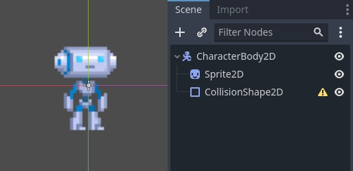
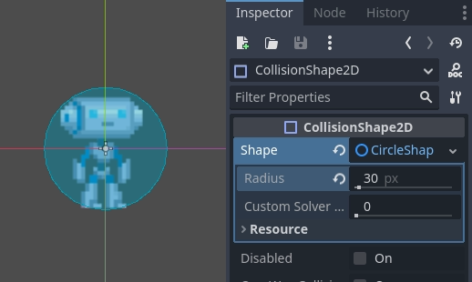

Nhân vật kinematic (2D)
Giới thiệu
Đúng vậy, cái tên nghe thật lạ. "Kinematic Character". Đó là gì? Lý do của cái tên này là khi các physics engine mới ra đời, chúng được gọi là engine "Dynamics" (vì chủ yếu xử lý phản hồi va chạm). Nhiều nỗ lực đã được thực hiện để tạo bộ điều khiển nhân vật bằng các dynamics engine, nhưng nó không dễ như tưởng tượng. Godot có một trong những bản triển khai bộ điều khiển nhân vật dynamic tốt nhất mà bạn có thể tìm thấy (như có thể thấy trong demo 2d/platformer), nhưng việc sử dụng nó đòi hỏi kỹ năng và hiểu biết đáng kể về physics engine (hoặc rất nhiều kiên nhẫn để thử và sai).
Một số physics engine, như Havok, có vẻ khẳng định bộ điều khiển nhân vật dynamic là lựa chọn tốt nhất, trong khi những engine khác (PhysX) lại ưu tiên loại kinematic.
Vậy, sự khác biệt là gì?:
Một bộ điều khiển nhân vật dynamic dùng một rigid body với tensor quán tính vô hạn. Đó là một rigid body không thể xoay. Physics engine luôn để các đối tượng di chuyển và va chạm, sau đó giải quyết tất cả va chạm cùng lúc. Điều này giúp bộ điều khiển nhân vật dynamic có thể tương tác liền mạch với các đối tượng vật lý khác, như thấy trong demo platformer. Tuy nhiên, các tương tác này không phải lúc nào cũng dự đoán được. Va chạm có thể mất hơn một khung hình để được giải quyết, nên một vài va chạm có thể trông như bị xê dịch một chút. Những vấn đề này có thể khắc phục được, nhưng đòi hỏi một mức kỹ năng nhất định.
Một bộ điều khiển nhân vật kinematic được giả định luôn bắt đầu ở trạng thái không va chạm, và sẽ luôn di chuyển đến trạng thái không va chạm. Nếu nó bắt đầu ở trạng thái va chạm, nó sẽ cố tự giải phóng giống như rigid body, nhưng đây là ngoại lệ, không phải quy tắc. Điều này khiến việc điều khiển và chuyển động của chúng dễ dự đoán hơn nhiều và dễ lập trình hơn. Tuy nhiên, nhược điểm là chúng không thể tương tác trực tiếp với các đối tượng vật lý khác, trừ khi được xử lý thủ công trong code.
Bài hướng dẫn ngắn này tập trung vào bộ điều khiển nhân vật kinematic. Nó dùng cách xử lý va chạm kiểu cũ, không hẳn đơn giản hơn về bản chất bên trong, nhưng được ẩn kỹ và cung cấp dưới dạng một API.
Physics process
Để quản lý logic của một kinematic body hay nhân vật, luôn nên dùng physics process, vì nó được gọi trước bước vật lý và việc thực thi của nó đồng bộ với physics server, đồng thời nó luôn được gọi với số lần mỗi giây như nhau. Điều này giúp việc tính toán vật lý và chuyển động hoạt động dễ dự đoán hơn so với dùng process thông thường, vốn có thể bị đột biến hoặc mất độ chính xác nếu tốc độ khung hình quá cao hoặc quá thấp.
extends CharacterBody2D
func _physics_process(delta):
pass
using Godot;
public partial class MyCharacterBody2D : CharacterBody2D
{
public override void _PhysicsProcess(double delta)
{
}
}
Thiết lập scene
Để có thứ gì đó để thử nghiệm, đây là scene (từ bài hướng dẫn tilemap): kinematic_character_2d_starter.zip. Chúng ta sẽ tạo một scene mới cho nhân vật. Hãy dùng sprite robot và tạo một scene như sau:

Bạn sẽ thấy có một biểu tượng cảnh báo bên cạnh node CollisionShape2D; đó là vì chúng ta chưa định nghĩa hình dạng cho nó. Hãy tạo một CircleShape2D mới trong thuộc tính shape của CollisionShape2D. Nhấp vào <CircleShape2D> để mở các tùy chọn của nó, và đặt bán kính (radius) thành 30:

Ghi chú: Như đã đề cập trong bài hướng dẫn vật lý, physics engine không thể xử lý tỷ lệ (scale) trên hầu hết các loại hình dạng (chỉ collision polygon, mặt phẳng và đoạn thẳng là hoạt động), vì vậy hãy luôn thay đổi các tham số (như bán kính) của hình dạng thay vì thay đổi tỷ lệ của nó. Điều tương tự cũng đúng với chính các kinematic/rigid/static body, vì tỷ lệ của chúng ảnh hưởng đến tỷ lệ của hình dạng.
Bây giờ, hãy tạo một script cho nhân vật, script được dùng làm ví dụ ở trên có thể dùng làm nền tảng.
Cuối cùng, tạo instance scene nhân vật đó trong tilemap, và đặt scene bản đồ làm scene chính để nó chạy khi nhấn play.

Di chuyển nhân vật kinematic
Quay lại scene nhân vật và mở script, phép màu bắt đầu từ đây! Mặc định kinematic body sẽ không làm gì cả, nhưng nó có một hàm hữu ích tên là CharacterBody2D.move_and_collide(). Hàm này nhận một Vector2 làm đối số, và cố gắng áp dụng chuyển động đó cho kinematic body. Nếu xảy ra va chạm, nó sẽ dừng lại ngay tại thời điểm va chạm.
Vậy, hãy di chuyển sprite của chúng ta xuống dưới cho đến khi chạm sàn:
extends CharacterBody2D
func _physics_process(delta):
move_and_collide(Vector2(0, 1)) # Move down 1 pixel per physics frame
using Godot;
public partial class MyCharacterBody2D : CharacterBody2D
{
public override void _PhysicsProcess(double delta)
{
// Move down 1 pixel per physics frame
MoveAndCollide(new Vector2(0, 1));
}
}
Kết quả là nhân vật sẽ di chuyển, nhưng dừng lại ngay khi chạm sàn. Khá hay phải không?
Bước tiếp theo là thêm trọng lực vào, theo cách này nhân vật sẽ hành xử giống một nhân vật game thông thường hơn một chút:
extends CharacterBody2D
const GRAVITY = 200.0
func _physics_process(delta):
velocity.y += delta * GRAVITY
var motion = velocity * delta
move_and_collide(motion)
using Godot;
public partial class MyCharacterBody2D : CharacterBody2D
{
private const float Gravity = 200.0f;
public override void _PhysicsProcess(double delta)
{
var velocity = Velocity;
velocity.Y += (float)delta * Gravity;
Velocity = velocity;
var motion = velocity * (float)delta;
MoveAndCollide(motion);
}
}
Giờ nhân vật rơi xuống một cách mượt mà. Hãy cho nó đi sang hai bên, trái và phải khi nhấn các phím mũi tên. Hãy nhớ rằng các giá trị đang dùng (ít nhất là cho tốc độ) có đơn vị là pixel/giây.
Đoạn này thêm hỗ trợ cơ bản cho việc đi lại khi nhấn trái và phải:
extends CharacterBody2D
const GRAVITY = 200.0
const WALK_SPEED = 200
func _physics_process(delta):
velocity.y += delta * GRAVITY
if Input.is_action_pressed("ui_left"):
velocity.x = -WALK_SPEED
elif Input.is_action_pressed("ui_right"):
velocity.x = WALK_SPEED
else:
velocity.x = 0
# "move_and_slide" already takes delta time into account.
move_and_slide()
using Godot;
public partial class MyCharacterBody2D : CharacterBody2D
{
private const float Gravity = 200.0f;
private const int WalkSpeed = 200;
public override void _PhysicsProcess(double delta)
{
var velocity = Velocity;
velocity.Y += (float)delta * Gravity;
if (Input.IsActionPressed("ui_left"))
{
velocity.X = -WalkSpeed;
}
else if (Input.IsActionPressed("ui_right"))
{
velocity.X = WalkSpeed;
}
else
{
velocity.X = 0;
}
Velocity = velocity;
// "MoveAndSlide" already takes delta time into account.
MoveAndSlide();
}
}
Và hãy thử chạy xem.
Đây là một điểm khởi đầu tốt cho game platformer. Bạn có thể tìm thấy một demo hoàn chỉnh hơn trong file zip demo được phân phối kèm engine, hoặc tại https://github.com/godotengine/godot-demo-projects/tree/master/2d/kinematic_character.